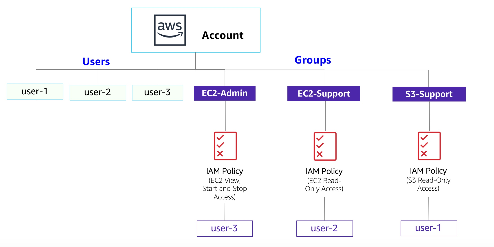

실습 1 – AWS IAM 소개
AWS Identity and Access Management(IAM)는 Amazon Web Services(AWS) 고객이 AWS에서 사용자와 사용자 권한을 관리할 때 사용할 수 있는 서비스입니다. IAM을 사용하면 사용자, 보안 자격 증명(예: 액세스 키) 및 사용자가 액세스할 수 있는 AWS 리소스를 제어하는 권한을 중앙에서 관리할 수 있습니다.
이 실습에서 다루는 주제
이 실습에서는 다음 내용을 다룹니다.

- 미리 생성된 IAM 사용자 및 그룹 알아보기
- 미리 생성된 그룹에 적용되는 IAM 정책 검사
- 실제 시나리오를 따라 특정 기능이 활성화된 그룹에 사용자를 추가
- IAM 로그인 URL 찾기 및 사용
- 서비스 액세스에 대한 정책의 영향을 실험
기타 AWS 서비스
이 실습 중에 실습 안내서에 포함된 단계 외의 작업을 수행하면 오류 메시지가 표시될 수 있습니다. 이러한 메시지는 실습을 완료하는 데 영향을 미치지 않습니다.
AWS Identity and Access Management
AWS Identity and Access Management(IAM)를 사용하여 다음 작업을 수행할 수 있습니다.
- IAM 사용자 및 해당 액세스 관리: 사용자를 생성하고 개별 보안 자격 증명(액세스 키, 암호, Multi-Factor Authentication 디바이스)을 해당 사용자에게 할당할 수 있습니다. 사용자가 수행할 수 있는 작업을 제어하는 권한을 관리할 수 있습니다.
- IAM 역할 및 해당 권한 관리: IAM 역할은 AWS에서 자격 증명으로 수행할 수 있는 작업과 수행할 수 없는 작업을 결정하는 권한 정책이 포함된 AWS 자격 증명이라는 점에서 사용자와 유사합니다. 하지만 한 사람에게 고유하게 연결되는 사용자와 달리, 역할은 필요한 모든 사람이 수임할 수 있도록 만들어졌습니다.
- 연동 사용자 및 해당 권한 관리: 자격 증명 연동을 사용하면 자격 증명별로 IAM 사용자를 생성하지 않아도 엔터프라이즈의 기존 사용자가 AWS Management Console에 액세스하고 AWS API를 호출하고 리소스에 액세스할 수 있습니다.
소요 시간
이 실습은 완료까지 약 40분이 소요됩니다.
AWS Management Console 액세스
지침의 맨 위에서 Start Lab을 클릭하여 실습을 시작합니다.
Start Lab 패널이 열리고 실습 상태가 표시됩니다. Start Lab 대화 상자가 열리면 이 실습 뒷부분에서 참조해야 하므로 AWS 리전을 적어둡니다.
“Lab status: ready” 메시지가 표시되면 X를 클릭하여 Start Lab 패널을 닫습니다.
지침의 맨 위에서 AWS를 클릭합니다.
그러면 새 브라우저 탭에서 AWS Management Console이 열립니다. 시스템에서 자동으로 로그인합니다.
팁: 새 브라우저 탭이 열리지 않는 경우 일반적으로 브라우저에서 팝업 창을 열 수 없음을 나타내는 배너 또는 아이콘이 브라우저 상단에 표시됩니다. 배너 또는 아이콘을 클릭하고 Allow pop ups를 선택합니다.
이러한 지침이 나란히 표시되도록 AWS Management Console 탭을 정렬합니다. 두 브라우저 탭이 동시에 표시되어 실습 단계를 보다 쉽게 수행할 수 있게 됩니다.
과제 1: 사용자 및 그룹 살펴보기
이 과제에서는 IAM에 이미 생성되어 있는 사용자 및 그룹을 살펴봅니다.
AWS Management Console의 Services 메뉴에서 IAM을 클릭합니다.
왼쪽 탐색 창에서 Users를 클릭합니다.
다음 IAM 사용자가 미리 생성되어 있습니다.
- user-1
- user-2
- user-3
user-1을 클릭합니다.
user-1에 대한 요약 페이지가 표시됩니다. Permissions 탭이 표시됩니다.
user-1에는 권한이 없습니다.
Groups 탭을 클릭합니다.
user-1은 그룹의 구성원이 아닙니다.
Security credentials 탭을 선택합니다.
user-1에 콘솔 암호가 할당됩니다.
왼쪽 탐색 창에서 Groups를 클릭합니다.
다음 그룹이 이미 생성되어 있습니다.
- EC2-Admin
- EC2-Support
- S3-Support
EC2-Support 그룹을 클릭합니다.
EC2-Support 그룹에 대한 요약 페이지로 이동합니다.
Permissions 탭을 클릭합니다.
이 그룹에는 AmazonEC2ReadOnlyAccess라는 관리형 정책이 연결되어 있습니다. 관리형 정책은 IAM 사용자 및 그룹에 연결할 수 있는 사전 구성된 정책입니다(AWS 또는 관리자가 작성). 정책이 업데이트되면 정책에 대한 변경 사항이 정책에 연결된 모든 사용자 및 그룹에 즉시 적용됩니다.
Actions에서 Show Policy 링크를 클릭합니다.
정책은 특정 AWS 리소스에 대해 허용되거나 거부되는 작업을 정의합니다. 이 정책은 EC2, Elastic Load Balancing, CloudWatch 및 Auto Scaling에 대한 정보를 나열하고 설명할 수 있는 권한을 부여합니다. 리소스를 볼 수 있지만 수정할 수 없는 이 기능은 지원 역할에 할당하기에 적합합니다.
IAM 정책에서 문의 기본 구조는 다음과 같습니다.
- Effect는 권한을 허용할지 거부할지를 말합니다.
- Action은 AWS 서비스에 수행할 수 있는 API 호출을 지정합니다(예: cloudwatch:ListMetrics).
- Resource는 정책 규칙이 적용되는 엔터티의 범위를 정의합니다(예: 특정 Amazon S3 버킷 또는 Amazon EC2 인스턴스 또는 모든 리소스를 나타내는 *).
Show Policy 창을 닫습니다.
왼쪽 탐색 창에서 Groups를 클릭합니다.
S3-Support 그룹을 클릭합니다.
S3-Support 그룹에는 AmazonS3ReadOnlyAccess 정책이 연결되어 있습니다.
Actions 메뉴 아래에서 Show Policy 링크를 클릭합니다.
이 정책에는 Amazon S3의 리소스를 가져오고 나열할 수 있는 권한이 있습니다.
Show Policy 창을 닫습니다.
왼쪽 탐색 창에서 Groups를 클릭합니다.
EC2-Admin 그룹을 클릭합니다.
이 그룹은 다른 두 그룹과 약간 다릅니다. 여기에는 Managed Policy 대신 하나의 사용자 또는 그룹에만 할당되는 정책인 Inline Policy가 있습니다. 인라인 정책은 일반적으로 일회성 상황에 대한 권한을 적용하는 데 사용됩니다.
Actions에서 Show Policy를 클릭하여 정책을 봅니다.
이 정책은 Amazon EC2에 대한 정보를 볼 수 있는 권한(Describe)과 인스턴스를 시작하고 중지할 수 있는 기능도 부여합니다.
화면 하단에서 Cancel을 클릭하여 정책을 닫습니다.
비즈니스 시나리오
나머지 실습에서는 이 사용자와 그룹을 사용해 다음의 비즈니스 시나리오를 지원하는 권한을 활성화합니다.
고객사는 Amazon Web Services의 사용을 확대하고 있으며, Amazon EC2 인스턴스와 Amazon S3 스토리지를 상당히 많이 사용하고 있습니다. 직무에 따라 새로운 직원에게 액세스 권한을 부여하고자 합니다.
| 사용자 | 그룹 내 | 권한 |
|---|---|---|
| user-1 | S3-Support | Amazon S3에 대한 읽기 전용 액세스 |
| user-2 | EC2-Support | Amazon EC2에 대한 읽기 전용 액세스 |
| user-3 | EC2-Admin | Amazon EC2 인스턴스 보기, 시작 및 중지 |
과제 2: 사용자를 그룹에 추가
최근에 Amazon S3에 대한 지원을 제공할 역할로 user-1을 고용했습니다. 이 사용자를 S3-Support 그룹에 추가하여 연결된 AmazonS3ReadOnlyAccess 정책을 통해 필요한 권한을 상속받습니다.
이 작업 중에 나타나는 "not authorized" 오류는 무시해도 됩니다. 이 오류는 실습 계정의 권한이 제한되어 있기 때문에 발생하는 오류이며 실습을 완료하는 데 영향을 미치지 않습니다.
S3-Support 그룹에 user-1 추가
왼쪽 탐색 창에서 Groups를 클릭합니다.
S3-Support 그룹을 클릭합니다.
Users 탭을 클릭합니다.
Users 탭에서 Add Users to Group을 클릭합니다.
Add Users to Group 창에서 다음을 구성합니다.
- user-1을 선택합니다.
- 화면 맨 아래에서 Add Users를 클릭합니다.
Users 탭에서 user-1이 그룹에 추가된 것을 알 수 있습니다.
EC2-Support 그룹에 user-2 추가
Amazon EC2에 대한 지원을 제공할 역할로 user-2를 고용했습니다.
위의 단계와 유사한 단계를 진행하여 user-2를 EC2-Support 그룹에 추가합니다.
이제 user-2는 EC2-Support 그룹의 일부입니다.
EC2-Admin 그룹에 user-3 추가
EC2 인스턴스를 관리하는 Amazon EC2 관리자로 user-3을 고용했습니다.
위의 단계와 유사한 단계를 진행하여 user-3을 EC2-Admin 그룹에 추가합니다.
이제 user-3은 EC2-Admin 그룹의 일부입니다.
왼쪽 탐색 창에서 Groups를 클릭합니다.
각 그룹의 사용자 수에 대한 사용자 열에 1이 표시되어야 합니다.
각 그룹 옆에 1이 없으면 비즈니스 시나리오 섹션의 표에 나와 있는 것처럼 위의 지침을 다시 검토하여 각 사용자가 그룹에 할당되었는지 확인합니다.
과제 3: 로그인 및 사용자 테스트
이 과제에서는 각 IAM 사용자의 권한을 테스트합니다.
화면 왼쪽에 있는 탐색 창에서 Dashboard를 클릭합니다.
다음과 유사한 형식의 IAM 사용자 로그인 링크가 표시됩니다. https://123456789012.signin.aws.amazon.com/console
이 링크는 현재 사용 중인 AWS 계정에 로그인하는 데 사용할 수 있습니다.
IAM 사용자 로그인 링크를 텍스트 편집기에 복사합니다.
프라이빗 창을 엽니다.
Mozilla Firefox
- 화면 오른쪽 위에 있는 메뉴 표시줄()을 클릭합니다.
- New Private Window를 선택합니다.
Google Chrome
- 화면 오른쪽 위에 있는 줄임표()를 클릭합니다.
- New incognito window를 클릭합니다.
Microsoft Edge
- 화면 오른쪽 위에 있는 줄임표()를 클릭합니다.
- New InPrivate window를 클릭합니다.
Microsoft Internet Explorer
- Tools 메뉴 옵션을 클릭합니다.
- InPrivate Browsing을 클릭합니다.
IAM 사용자 로그인 링크를 프라이빗 창에 붙여 넣고 Enter 키를 누릅니다.
이제 Amazon S3 스토리지 지원 인력으로 고용된 user-1로 로그인합니다.
다음 정보를 사용하여 로그인합니다.
- IAM 사용자 이름:
user-1 - 암호:
Lab-Password1
- IAM 사용자 이름:
Services 메뉴에서 S3를 클릭합니다.
버킷 중 하나의 이름을 클릭하고 콘텐츠를 찾아봅니다.
사용자는 IAM에서 S3-Support 그룹의 일부이므로 Amazon S3 버킷 목록과 해당 콘텐츠를 볼 수 있는 권한이 있습니다.
이제 Amazon EC2에 액세스할 수 있는지 테스트합니다.
Services 메뉴에서 EC2를 클릭합니다.
왼쪽 탐색 창에서 Instances를 클릭합니다.
인스턴스를 볼 수 없습니다! 대신, 이 리전에 인스턴스가 없습니다. 사용자에게 Amazon EC2 사용 권한이 할당되지 않았기 때문입니다.
이제 Amazon EC2 지원 인력으로 고용된 user-2로 로그인합니다.
다음을 구성하여 AWS Management Console에서 user-1를 로그아웃합니다.
- 화면 상단에서 user-1를 클릭합니다.
- Sign Out을 클릭합니다.

IAM 사용자 로그인 링크를 프라이빗 창에 붙여 넣고 Enter 키를 누릅니다.
이 링크는 텍스트 편집기에 있어야 합니다.
다음 정보를 사용하여 로그인합니다.
- IAM 사용자 이름:
user-2 - 암호:
Lab-Password2
- IAM 사용자 이름:
Services 메뉴에서 EC2를 클릭합니다.
왼쪽 탐색 창에서 Instances를 클릭합니다.
읽기 전용 권한이 있으므로 이제 Amazon EC2 인스턴스를 볼 수 있습니다. 그러나 Amazon EC2 리소스를 변경할 수 없습니다.
Amazon EC2 인스턴스가 표시되지 않는 경우 리전이 잘못되었을 수 있습니다. 화면의 오른쪽 상단에서 리전 메뉴를 클릭하여 실습을 시작할 때 기록한 리전을 선택합니다(예: N. Virginia).

EC2 인스턴스가 선택되어야 합니다.() 선택되지 않은 경우 선택합니다.()
- Actions 메뉴에서 Instance State > Stop을 클릭합니다.
- Stop Instances 창에서 Yes, Stop을 클릭합니다.

You are not authorized to perform this operation라는 오류가 표시됩니다. 이 오류는 정책에서 정보의 변경 없이 정보를 보는 것만 허용한다는 것을 나타냅니다.
Stop Instances 창에서 Cancel을 클릭합니다.
그런 다음 user-2가 Amazon S3에 액세스할 수 있는지 확인합니다.
Services에서 S3를 클릭합니다.
Error Access Denied가 표시됩니다. user-2에 Amazon S3를 사용할 권한이 없기 때문입니다.
이제 Amazon EC2 관리자로 고용된 user-3으로 로그인합니다.
다음을 구성하여 AWS Management Console에서 user-2를 로그아웃합니다.
- 화면 상단에서 user-2를 클릭합니다.
- Sign Out을 클릭합니다.

IAM 사용자 로그인 링크를 프라이빗 창에 붙여 넣고 Enter 키를 누릅니다.
웹 브라우저의 주소 표시줄에 로그인 링크를 다시 붙여 넣습니다. 클립보드에 없는 경우 이전에 저장한 텍스트 편집기에서 이 링크를 검색합니다.
다음 정보를 사용하여 로그인합니다.
- IAM 사용자 이름:
user-3 - 암호:
Lab-Password3
- IAM 사용자 이름:
Services 메뉴에서 EC2를 클릭합니다.
왼쪽 탐색 창에서 Instances를 클릭합니다.
이제 EC2 관리자로서 Amazon EC2 인스턴스를 중지할 권한이 있어야 합니다.
EC2 인스턴스가 선택되어야 합니다.() 그렇지 않은 경우 선택합니다().
Amazon EC2 인스턴스가 표시되지 않는 경우 리전이 잘못되었을 수 있습니다. 화면의 오른쪽 상단에서 리전 메뉴를 클릭하여 실습을 시작할 때 기록한 리전을 선택합니다(예: Oregon).
Actions 메뉴에서 Instance State > Stop을 클릭합니다.
Stop Instances 창에서 Yes, Stop을 클릭합니다.
인스턴스가 stopping 상태가 되고 종료됩니다.
프라이빗 창을 닫습니다.
실습 완료
축하합니다! 실습을 마쳤습니다.
이 페이지의 상단에서 End Lab을 클릭하고 Yes를 클릭하여 실습 종료를 확인합니다.
"DELETE has been initiated... You may close this message box now"라는 내용의 패널이 표시됩니다.
오른쪽 상단 모서리에 있는 X를 클릭하여 패널을 닫습니다.
최종 결과
축하합니다! 다음 작업이 성공적으로 완료되었습니다.
- 미리 생성된 IAM 사용자와 그룹 탐색
- 미리 생성된 그룹에 적용되는 IAM 정책 검사
- 실제 시나리오에 따라 특정 기능이 활성화된 그룹에 사용자 추가
- IAM 로그인 URL 찾기 및 사용
- 정책이 서비스 액세스에 미치는 영향 실험
추가 리소스
피드백 또는 제안 사항이 있거나 수정이 필요한 경우 다음 주소로 이메일을 보내 주십시오. aws-course-feedback@amazon.com